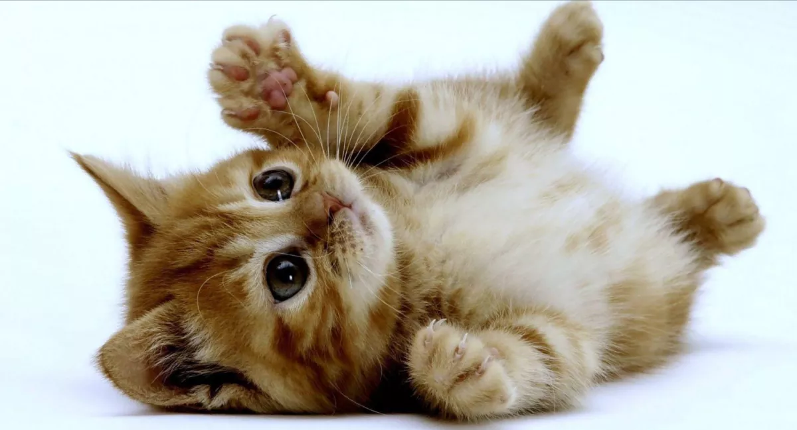
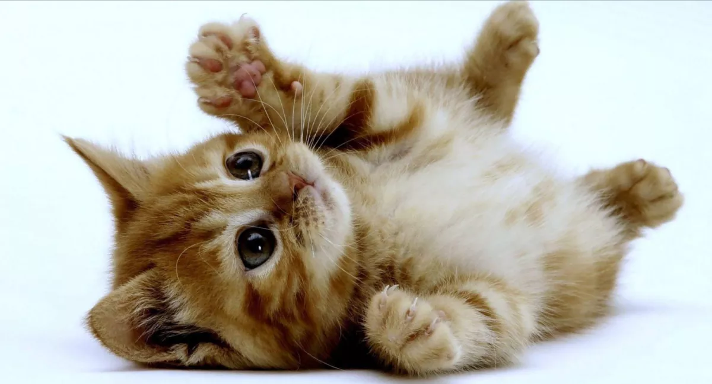

This is a normal telegraph.
This sentence has been italiced.
This sentence has been bolded.
This sentence has been italiced and bolded.
Following will be a skip line as (br) tag.
Following will be a line draw.
This is an end message.
 
